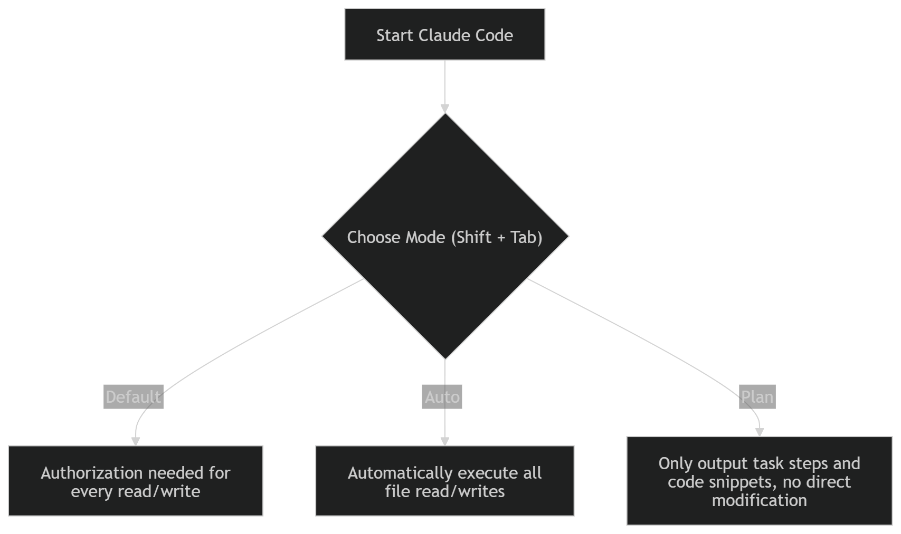

1. Environment Setup & Basic Interaction (Environment Setup & Basic Interaction)#
This chapter will guide you from scratch to set up the runtime environment for Claude Code and complete your first basic interaction. As a highly popular AI programming Agent, Claude Code can significantly boost your development efficiency.
1.1. Installing Claude Code#
To install Claude Code, perform the following steps:
Visit the official Claude Code website and copy the installation command.
Paste and run the installation command in your terminal. Example:
# Typical installation command (based on official prompts)
npm install -g @anthropic-ai/claude-code
Image Suggestion (Nanobanana Prompt): A sleek, minimalist dark-themed terminal application window on a desk. The terminal screen displays a clean green checkmark in the center, accompanied by glowing crisp white text reading “Claude Code Installed Successfully!”. Below the text, there is a prominent progress bar filled to 100%. The surrounding environment is a dimly lit cyberpunk hacker room with subtle neon blue backlighting on the keyboard, ultra-detailed 8k resolution, cinematic lighting.
1.3. The First Practical Task#
Next, we will use Claude Code to create a simple ToDo application.
Enter the command:
Make a ToDo app for me, implement it using HTML.Claude Code will plan to create an
index.htmlfile and prompt you for permission/authorization.
1.4. Understanding the Three Modes (Default / Auto / Plan)#
When Claude Code wants to perform file operations (like creating a file), you face a choice among three authorization modes. You can use the Shift + Tab shortcut to toggle between them:
Default Mode (“Press ? for shortcuts”): The most cautious mode. It asks for the user’s explicit permission before every file creation or modification.
Auto Mode (“Accept edits on”): The most convenient mode. It automatically agrees to all file read/write operations during the current conversation, stopping repeated prompts.
Plan Mode (“Plan mode on”): Dedicated to discussing solutions and making plans without directly modifying project files. Ideal for brainstorming complex architectural changes.

1.5. Read More#
Claude Code Official Documentation — Full feature reference and setup guide.
Claude Code CLI Reference — Complete list of commands and flags.
Getting Started with Claude Code (Anthropic Blog) — Official introduction and use cases.
Node.js Download — Required runtime for Claude Code installation.
1.6. Knowledge Quiz#
Q1: What command should you use to manually trigger the login process in Claude Code?
Answer
Type the `/login` command to trigger the login flow manually.Q2: If you want Claude Code to freely modify code during the current session without bothering you, which mode should you switch to? What shortcut key is used?